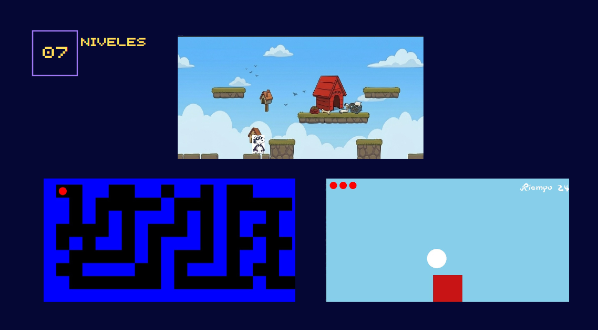

Snoopy es un proyecto que se realizo con tiempo, dedicacion y esfuerzo por 4 personas que aman lo que hacen, 4 estudiantes que dia a dia dieron un extra para poder conseguir el resultado que ahora tienen el honor de compartir con toda la comunidad de Prepa 6, esperan que este sea de su agrado y a su vez que los motive a no dejar de lado nuestro increible Estudio Tecnino en Computacion. Ellos son: Bonilla martínez Sofía Yael Castillo Márquez Beni, Axel Díaz, Peralta nadia Lizet, Hernández santiago karla elizabeth
Snoopy tendrá que recorrer diferentes escenarios y circunstancias: La tierra, Un laberinto y En el aifreWoodstock que está perdido, evadiendo todo los obstaculos que se le puedan llegar a presentar a su vez deberá encontrarlo a como dé lugar, antes de que woodstock se aleje y se pierda por completo.
Una vez que ya sabemos un poco mas sobre la historia del juego tenemos que saber cuales son nuestros objetivos por que y para que estamos en esta increible mision.Entre ellos se nos dictamina un unico objetivo, tan importante como retador y este es Encontrar a Woodstock a tiempo, antes de que le pueda pasar algo o lo perdamos para siempre
El juego se construye de 3 niveles, cada uno de ellos comprende una parte unica y esencial del juego a traves de los cuales se tienen que atravesar distintos obstaculos y a su vez se pondran a prueba dos de los valores mas importantes como lo son la paciencia y adaptabilidad. En el primer nivel tenemos por inicio dos condiciones las cuales son que si se acaba el tiempo o se cae al vacío no se pasara el nivel, en el segundo nivel son tres laberintos diferentes estos se seleccionan aleatoriamente cada vez que entras al nivel y se tienen que pasar antes de que termine el tiempo y por ultimo el tercer nivel, este tiene tres subniveles que se deben pasar por ultimo es de suma importancia recordar que cada nivel del juego tendrá solamente tres vidas, sin embargo, seguirá reiniciándose hasta que se completen los nieveles bajo el tiempo determinado y pasando los obstáculos.
